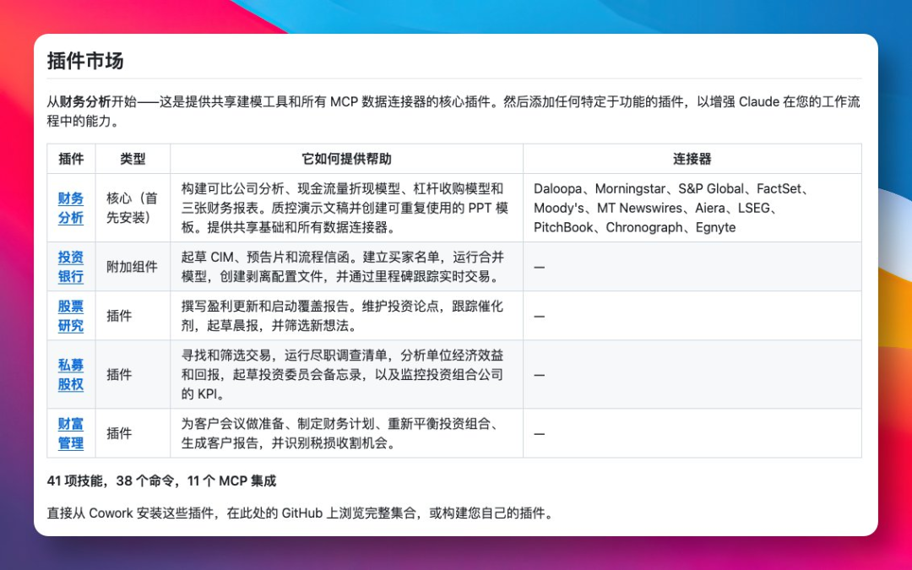
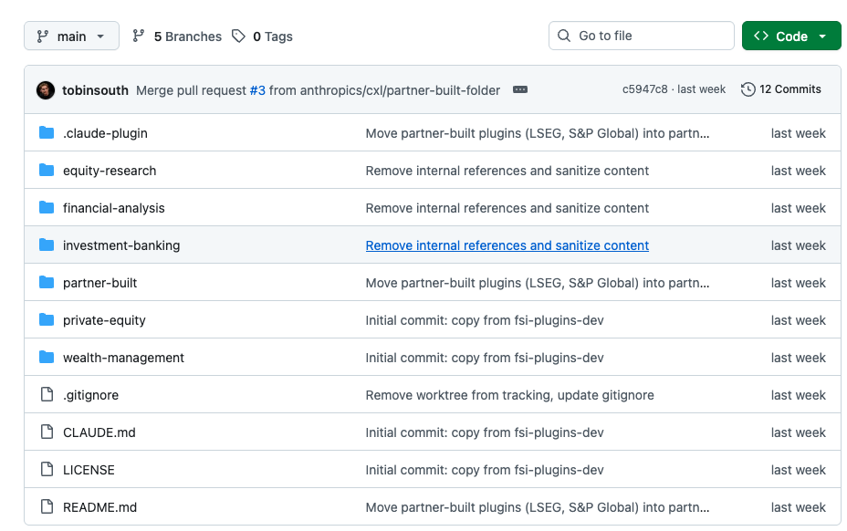

做金融分析的朋友应该都懂那种痛感： 一边捣鼓 Excel 模型、一边翻终端、还有一堆 PDF 研报排队，手指在 Alt+Tab 间来回横跳，人直接被折腾成「高级搬运工」。
现在 Anthropic 敲了下桌子，干脆把一整套金融插件开源了。 名字也很直白：Financial Services Plugins，把 Claude 直接调教成投行、股票研究、私募股权、财富管理四大条线的「专业打工人」。

有意思的是，这不是那种「陪你聊天顺便帮你算个 PEG」的小玩具。 它支持从读研报、提炼要点、做竞品对比，到落地 Excel 模型、再产出一份规规矩矩的路演 PPT，全流程一条龙。 Excel 里还能直接吐出带公式的模型结构，而不是一坨「价值=一串数字」的截图，看得出是懂行的人写的 Prompt。
官方预置了 40 多种专业技能和指令，什么竞品分析、会议纪要、投资备忘录，全部做成了模块化的「技能包」。 甚至连压力测试这种平时比较花时间的活，也能交给插件先跑一遍，分析不同情景下估值、盈利的弹性区间。 你只管调参数、挑结果，感觉就像给团队多招了一个不喊累的初级分析师。
从工程角度看，这波操作也挺香。 这套东西是专门为 Claude Cowork 设计的，Claude Code 也能吃，用的都是同一套插件体系。 所有配置几乎都摊在 GitHub 上，用 Markdown 写说明、用 JSON 写指令和模板，没有复杂的后端工程，更多是「高配版 Prompt 工程」的感觉。

对机构来说，真正爽的是可以按自家风格改造。 比如把券商/银行内部的估值模版、行业分组、财报口径塞进 JSON 里，让 Claude 说话就带着你们那一套「行研口头禅」。 再接上 MCP 之类的连接器，把内部系统、数据库串进来，研报、公告、路演纪要一键喂给模型，等于是把「机构记忆」整体外挂给了 AI。
这和传统那种「开个聊天窗口问几句」不一样。 以前是人围着工具转，现在是把工具钉进流程里，让 AI 从一开始就参与信息收集、建模、写稿，而不是最后来帮你润色两句英文摘要。 对不少投行、PE、财富管理团队来说，这更像是重构工作流，而不是多了个会写文案的搜索引擎。
当然，它现在扮演的角色，还是一个高水平初级分析师： 能帮你搭框架、搬数据、先跑一版模型，但拍板的依然是人。 真正考验团队的是：愿不愿意把自己的方法论拆开来、标准化，变成一条条可配置的规则，这是很多机构最难迈出去的那一步。
GitHub 地址：github.com/anthropics/financial-services-plugins